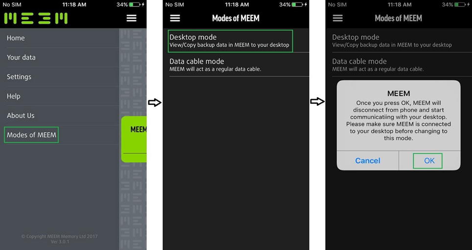
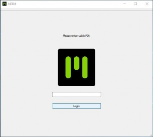
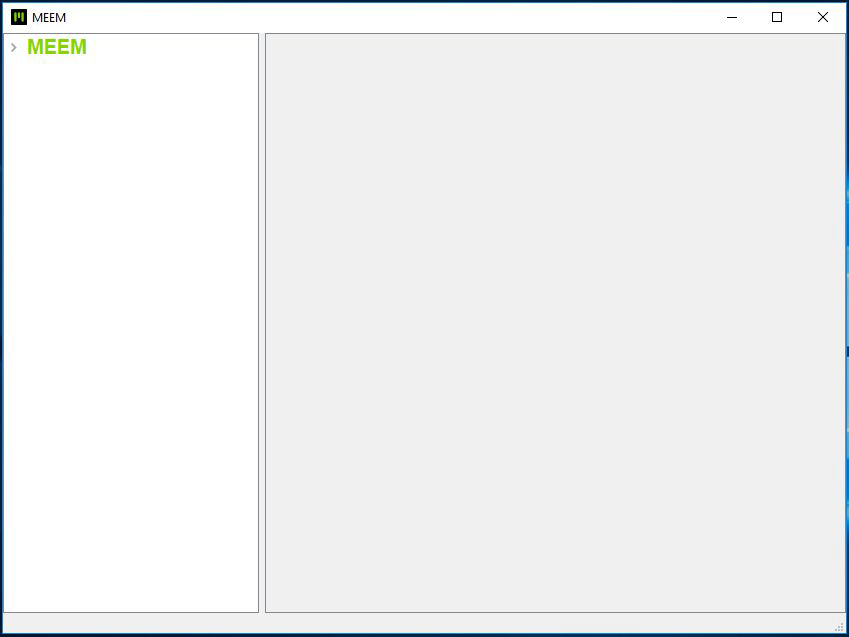

MEEM-DESKTOP-APP
Mit der MEEM-Desktop-App können Sie die auf Ihrem MEEM-Kabel gesicherten Daten auf Ihrem Mac, Windows- oder Linux-Computer anzeigen und speichern.
BITTE LESEN SIE DIE BEDIENUNGSANLEITUNG FÜR DIE MEEM-DESKTOP-APP, BEVOR SIE MIT DIESEM ABSCHNITT FORTFAHREN.
Detaillierte Informationen zur Installation und Nutzung der MEEM-Desktop-App finden Sie in der Bedienungsanleitung für die MEEM-Desktop-App, zu finden auf unserer Hilfeseite, ganz unten unter DOWNLOADS: https://www.meemmemory.com/help/
Bitte installieren Sie die Anwendung zunächst auf Ihrem Computer, bevor Sie die folgenden Schritte durchführen, um die Funktion für die MEEM-Desktop-App auf Ihrem Mobilgerät zu nutzen:

Warten Sie, bis die MEEM-Desktop-App automatisch auf dem PC/Laptop startet. Geben Sie die 4-stellige PIN ein, die Sie für die Registrierung/Einrichtung des neuen Kabels benutzt haben, und klicken Sie auf die Anmelden-Schaltfläche (wie im Bild unten gezeigt).

Nach erfolgreicher Anmeldung wird der Standard-Kabelname „MEEM“ im linken Feld des App-Fensters angezeigt, wie in Bild 14 dargestellt.

Nachdem Sie diese Schritte durchgeführt haben, können Sie die Daten auf Ihrem MEEM-Kabel auf dem Computer anzeigen und sie auf den Computer übertragen. Detaillierte Informationen entnehmen Sie bitte der Bedienungsanleitung für die MEEM-Desktop-App. Detaillierte Informationen zur Installation und Nutzung der MEEM-Desktop-App finden Sie in der Bedienungsanleitung für die MEEM-Desktop-App, zu finden auf unserer Hilfeseite, ganz unten unter DOWNLOADS: https://www.meemmemory.com/help/